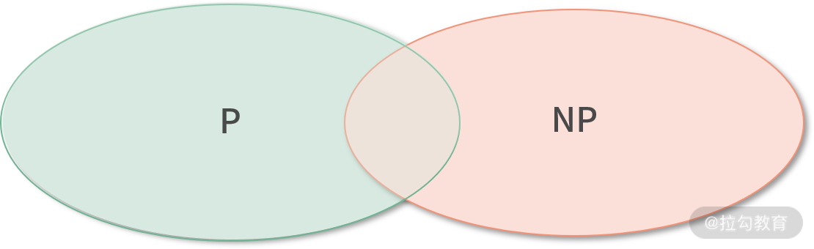

- 00 开篇词 为什么大厂面试必考操作系统？.md.html
- 00 课前必读 构建知识体系，可以这样做！.md.html
- 01 计算机是什么：“如何把程序写好”这个问题是可计算的吗？.md.html
- 02 程序的执行：相比 32 位，64 位的优势是什么？（上）.md.html
- 03 程序的执行：相比 32 位，64 位的优势是什么？（下）.md.html
- 04 构造复杂的程序：将一个递归函数转成非递归函数的通用方法.md.html
- 05 存储器分级：L1 Cache 比内存和 SSD 快多少倍？.md.html
- 05 (1) 加餐 练习题详解（一）.md.html
- 06 目录结构和文件管理指令：rm -rf 指令的作用是？.md.html
- 07 进程、重定向和管道指令：xargs 指令的作用是？.md.html
- 08 用户和权限管理指令： 请简述 Linux 权限划分的原则？.md.html
- 09 Linux 中的网络指令：如何查看一个域名有哪些 NS 记录？.md.html
- 10 软件的安装： 编译安装和包管理器安装有什么优势和劣势？.md.html
- 11 高级技巧之日志分析：利用 Linux 指令分析 Web 日志.md.html
- 12 高级技巧之集群部署：利用 Linux 指令同时在多台机器部署程序.md.html
- 12 (1)加餐 练习题详解（二）.md.html
- 13 操作系统内核：Linux 内核和 Windows 内核有什么区别？.md.html
- 14 用户态和内核态：用户态线程和内核态线程有什么区别？.md.html
- 15 中断和中断向量：Javajs 等语言为什么可以捕获到键盘输入？.md.html
- 16 WinMacUnixLinux 的区别和联系：为什么 Debian 漏洞排名第一还这么多人用？.md.html
- 16 (1)加餐 练习题详解（三）.md.html
- 17 进程和线程：进程的开销比线程大在了哪里？.md.html
- 18 锁、信号量和分布式锁：如何控制同一时间只有 2 个线程运行？.md.html
- 19 乐观锁、区块链：除了上锁还有哪些并发控制方法？.md.html
- 20 线程的调度：线程调度都有哪些方法？.md.html
- 21 哲学家就餐问题：什么情况下会触发饥饿和死锁？.md.html
- 22 进程间通信： 进程间通信都有哪些方法？.md.html
- 23 分析服务的特性：我的服务应该开多少个进程、多少个线程？.md.html
- 23 (1)加餐 练习题详解（四）.md.html
- 24 虚拟内存 ：一个程序最多能使用多少内存？.md.html
- 25 内存管理单元： 什么情况下使用大内存分页？.md.html
- 26 缓存置换算法： LRU 用什么数据结构实现更合理？.md.html
- 27 内存回收上篇：如何解决内存的循环引用问题？.md.html
- 28 内存回收下篇：三色标记-清除算法是怎么回事？.md.html
- 28 (1)加餐 练习题详解（五）.md.html
- 29 Linux 下的各个目录有什么作用？.md.html
- 30 文件系统的底层实现：FAT、NTFS 和 Ext3 有什么区别？.md.html
- 31 数据库文件系统实例：MySQL 中 B 树和 B+ 树有什么区别？.md.html
- 32 HDFS 介绍：分布式文件系统是怎么回事？.md.html
- 32 (1)加餐 练习题详解（六）.md.html
- 33 互联网协议群（TCPIP）：多路复用是怎么回事？.md.html
- 34 UDP 协议：UDP 和 TCP 相比快在哪里？.md.html
- 35 Linux 的 IO 模式：selectpollepoll 有什么区别？.md.html
- 36 公私钥体系和网络安全：什么是中间人攻击？.md.html
- 36 (1)加餐 练习题详解（七）.md.html
- 37 虚拟化技术介绍：VMware 和 Docker 的区别？.md.html
- 38 容器编排技术：如何利用 K8s 和 Docker Swarm 管理微服务？.md.html
- 39 Linux 架构优秀在哪里.md.html
- 40 商业操作系统：电商操作系统是不是一个噱头？.md.html
- 40 (1)加餐 练习题详解（八）.md.html
- 41 结束语 论程序员的发展——信仰、选择和博弈.md.html
01 计算机是什么：“如何把程序写好”这个问题是可计算的吗？
我记得自己在面试中遇到过这样一个问题：“可不可以计算一个人程序写得好不好？”
当时我也没有想明白“计算”这个词是什么意思。但事后分析来看，“计算”不就是写程序吗？
其实简单理解这个问题就是“可不可以用机器来判断人的程序写得好不好？”如果从这个角度考虑，我是可以和面试官论述一番的。
后面我查阅了资料，历史上有一个对计算机领域影响颇深的可计算理论，面试官说的“计算”应该就来源于这里。其实继续深挖还能找出很多涉及计算机本源的有趣的知识，比如图灵机、冯诺依曼模型；再比如说 CPU 的构成、程序如何执行、缓存的分级、总线的作用等。
上面提到的这些内容其实都属于操作系统的前置课程，我会利用第一章 4 个课时和大家探讨一下计算机组成原理，然后我们再正式进入操作系统的学习。其实学习就是这样，追溯源头，回到本质，才能挖掘兴趣、激发思考，否则就变成了死记硬背。接下来我们将从计算能源的角度入手，来展开今天的课程学习。
芯片：计算能源
我们知道第一次工业革命出现了蒸汽机，能源是煤炭。第二次工业革命出现了发电机，能源是电。20 世纪四五十年代，又发生了第三次科技革命，革命产物是计算机。而第四次科技革命，就发生在当下，出现了人工智能，能源是数据。
说到这里，你可能会有个疑问：第三次科技革命的能源是什么呢？
你的第一反应可能是电，但是细想又觉得不对。前两次工业革命都有带来能源变革，为什么第三次科技革命就没有了能源变革？其实，第三次科技革命的能源是一种数字能量，本质是计算。
下面我们来看一看这种数字能量是如何产生的。电能供给给芯片，芯片中的一种电子元件晶振（也就是石英晶体）通电后产生震荡，震荡会产生频率稳定的脉冲信号。通常这是一种高频的脉冲信号，每秒可达百万次。然后，我们通过谐振效应发放这个信号，形成方波。再通过电子元件调整这种脉冲的频率，把脉冲信号转换为我们需要的频率，这就形成了驱动芯片工作的时钟信号。这种信号的频率，我们也称作芯片的时钟频率。最后，时钟信号驱动着芯片工作，就像人体的脉搏一样，每一次脉冲到来，都让芯片的状态发生一次变化，用这种方法，最终存储器中的指令被一行行执行。指令被执行，其实就是数据被计算，这就是我说的计算能量。
芯片普及后，不仅给计算机和手机提供支持，它们还被安装到了航天设备、能源设备、医疗设备及通信设备中，甚至小到电灯、微波炉、咖啡机、热水器里面都有了芯片。有了芯片，设备通电后才可以计算，有了计算，这些设备才能够实现更加复杂而精确的功能。
摩尔定律：计算能力的发展
值得一提的是，历史上是先有计算机，后有的芯片。世界上第一个芯片，也被称作集成电路， 1958 年由美国德州仪器公司的工程师杰克·基尔比发明。而世界上第一台通用计算机 ENIAC 则是在 1946 年诞生于美国陆军弹道研究实验室。
看到这里你可能会有疑问，为什么是先发明计算机再发明芯片呢？
其实，这个道理就好比很多程序员先实现产品功能，再考虑封装和复用。ENIAC 中负责计算的模块和后来的芯片原理是一样的，都是利用电路实现逻辑运算。只不过在 20 世纪 40 年代人们还没有将这种能力抽象成一个独立的产品，而且也没有办法解决电路体积的问题，ENIAC的体积看上去就像一所学校那么大。
芯片的计算能力来源于芯片内部的集成电路，集成电路大大减小了电路的体积，所有的元件都是用同一块半导体材料制作而成，也就是把所有的电路都集成到了一个单一的硅片上。为了提高计算性能，集成电路越来越复杂，里面的电子元件也越来越多。从最早拥有 100 个左右晶体管的小型集成电路，发展到 21 世纪初，拥有上亿电子元件的巨大规模集成电路。
芯片的发展，带来了计算能力的飞跃，ENIAC 只能每秒计算 5000 次加法和 400 次乘法，到 1978 年 8086 芯片已经可以每秒计算百万次了。而今天随便一个芯片不但可以轻轻松松每秒计算数亿次，而且不只有一个核心，是多个核心都能达到这一量级的计算能力。
在当时那个年代，Intel 的创始人之一摩尔就观察到了这个现象，并提出了摩尔定律：当价格不变时，集成电路中可容纳的晶体管数目约每隔 18～24 个月就会增加一倍，性能也将提升一倍。这一定律揭示了信息技术发展的速度，但到今天，摩尔定律失效了。因为随着芯片越来越小，在尺寸和散热等方面已经挑战了人类的极限，芯片中无法再放入更多的电子元件了。
但是计算能力又开始以另一种方式发展，比如一个普普通通的 NVIDA 显卡中就拥有了几百个核心，这样就可以进行大量的并发计算；另外，一个分布式的大数据集群，里面就可能有上千个核心。
展望未来，计算能力还有更多的增长点，不仅有可以无限提高计算能力的量子计算机，还有利用光学元件替代晶体元件的光电集成电路。
可计算理论：图灵机
当然，在科学家们尝试发明计算机和芯片之前，他们必须回答一个问题，那就是计算或者程序可以用来做什么？比如：计算可不可以用来做饭？换一个更专业的说法，做饭可不可以被计算？
生活在数字时代的我们，用着导航、玩着游戏，本能地知道很多问题是可以被计算的，但是生活在 20 世纪初的科学家们，需要在没有计算机和芯片的时代就想清楚这些问题，并不是一件容易的事情。
公理化体系和不完备性定理
最早在 19 世纪初，德国著名数学家希尔伯特提出：这个世界可以建立一套完善的公理体系，由少数几个公理出发，推导出所有的定理和推论。这样就可以逐渐通过这种方法将世界上的万事万物都统一到一个体系中。
当然，这只是一个非常美好的设想，如果万事万物都可以用形式化（简单理解就是程序化规范化）的手段统一到一套体系中，也就意味着计算能力将被无限扩展，只要给定足够的时间和空间，计算机就可以完成任何工作。
但在不久后，美籍数学家哥德尔就提出了哥德尔不完备性定理，内容是：即便在完善的公理体系中仍然可以找到不能被证明也不能被证伪的命题。
这让我联想到，一说谎，鼻子就会变长的匹诺曹。如果他说“我说谎了”，那么他的鼻子应该变长还是变短呢？对于人类而言，这个问题可以理解，但是对于计算机来说这个问题是不可以被计算的。
正是因为世界上存在着大量的这种“公说公有理，婆说婆有理”的问题，才让大家认识到计算不能解决所有问题，所以：计算机能力也是有边界的。哥德尔的不完备性定理，让大家看到了世界上还有大量不可计算的问题。
图灵机和可计算理论
于是人们意识到了需要一个理论，专门回答这样的问题：哪些问题可以被计算，哪些不可以被计算，这就是可计算性理论，该理论是计算机科学的理论基础之一。
1936 年，被誉为人工智能之父的阿兰·图灵提出了图灵机，它是一种不断执行指令的抽象计算机。之所以说抽象，是因为图灵并没有真的造出这台机器，而是把它当成理论去和大家探讨可计算问题。
图灵发现如果一个问题是可计算的，那么它的解决方案就必须可以被具化成一条条的指令，也就是可以使用图灵机处理。因此，不能使用图灵机处理的问题，都是不可计算的问题。
比如一个马达的控制程序是可计算的，因为控制过程是可以被抽象成一条条指令的（即可以写程序实现）。比如程序可以先读入传感器的数据，然后根据数据计算出下面要进行加速还是减速。
不可计算问题
但当图灵机遇到“素数是不是有无穷多个？”这样的问题时，事情就变得复杂了。虽然，我们可以通过有限的步骤计算出下一个素数。比如可以每次尝试一个更大的数字，然后通过一系列计算过程判断该数字是不是素数，直到找到一个更大的素数。古希腊数学家埃拉托斯特尼就发明了筛选出给定范围内所有素数的方法。

如上图所示，我们利用埃拉托斯特尼筛法找到的素数越来越多。但是，我们还是不能回答“素数是不是有无穷多个”这样的问题。因为要回答这样的问题，我们会不停地寻找下一个素数。如果素数是无穷的，那么我们的计算就是无穷无尽的，所以这样的问题不可计算。
停机问题
我们也无法实现用一个通用程序去判断另一个程序是否会停止。比如你用运行这段程序来检查一个程序是否会停止时，你会发现不能因为这个程序执行了 1 天，就判定它不会停止，也不能因为这个程序执行了 10 年，从而得出它不会停止的结论。这个问题放到图灵机领域，叫作停机问题，我们无法给出一个判断图灵机是否会停机的通用方法，因此停机问题是一个经典的不可计算问题。
计算能力的边界在哪里？
我们可以把世界上想解决的事情都称作问题，解决问题往往需要消耗芯片的计算能力，这通常称作时间开销，另外解决问题还需要消耗内存，称作空间开销。
问题的分类
世界上有一类问题，无论我们消耗多少时间和空间也无法解决，这类问题就包括“停机问题”，称作不可计算问题，我们无法用计算机精确地解决这类问题。世界上不可计算问题多，还是可计算问题多，也是一个不可计算问题，但直觉告诉我们一定是不可计算问题更多。
另外在可计算的问题中，有困难问题，也有简单问题，我们通常用复杂度来衡量，比如：
- “求数组第 10 个元素”，计算这种问题，时间开销、空间开销都不会随着问题规模增长，我们记为 O(1)；
- “求数组中的最大值”，计算这种问题，时间开销会随着数组规模线性增大，记作 O(N)，N 是问题的规模；
- 还有像“求一个n*n矩阵的和”，如果n是规模，那么时间开销会随着问题规模的平方增长，我们称作 O(N2)；
- 当然也有更加复杂的数学模型，比如说O(N3)、O(N4)、O(N100)等。
P 问题 vs NP 问题
按照摩尔定律所说，人类的计算能力每 18～24 个月翻一倍，我们的计算能力在呈指数形式上升。因此，在所有可以计算的问题中，像 O(N1000)的问题，虽然现在的计算能力不够，但是相信在遥远的未来，我们会拥有能力解决。这种我们有能力解决的问题，统称为多项式时间（ Polynomial time）问题。我们今天能解决的问题，都是多项式时间的问题，下面记为 P 类型的问题。

另外，还有一类问题复杂度本身也是指数形式的问题，比如 O(2N)的问题。这类型的问题随着规模 N 上升，时间开销的增长速度和人类计算能力增长速度持平甚至更快。因此虽然这类问题可以计算，但是当 N 较大时，因为计算能力不足，最终结果依然无法被解决。
由此可见，不是所有可以计算的问题都可以被解决，问题如果不能在多项式时间内找到答案，我们记为 NP 问题。
有一部分 NP 问题可以被转化为 P 问题，比如斐波那契数列求第 N 项，可以用缓存、动态规划等方式转化为 O(N) 的问题。但还有更多的 NP 问题，比如一个集合，找出和为零的子集，就没能找到一个合适的转换方法。其实说这么多，就是想告诉大家：如今还有很多问题无法解决，它的数量远远大于我们可以解决的问题，科学家、工程师们也只能望洋兴叹了。
人工智能
此外，包括停机问题、包括 NP 问题在内的很多问题，虽然不能解决，但可以努力让计算机的解决方案超过人类的水平，这就是人工智能。
比如下围棋，围棋盘是 19*19 的，共有 361！种情况，如果遍历 361！种情况，并进行打分，共有 10 的 170 次方种可能，因此，我们的计算能力是远远不足的。但是如果使用人工智能方法对可能出现的部分情况进行概率判断，在不追求绝对精确的情况下，人工智能就可以超过人类选手。
AlphaGo 战胜李世石就是利用了基于概率的不完全解法，这种解法已经可以超过部分人类职业选手了，也就是说计算机的解法已经超过了人类。当然，人类的强项在于理解和分析，人有两种思维，归纳和假设，这两种思维都是计算机无法计算的。机器用概率理解围棋，局部来说机器下得更好，但是人可以制造机器，因此，人的感悟更有意义，谈不上孰优孰劣。
针对这种解决问题的方法，20 世纪中人工智能之父图灵，提出图灵测试，就是在一次人机对话中，随机抽样一部分的实验者和机器对话，如果这部分实验者有较大的百分比判断对面是人而不是机器，那这台机器就通过了图灵测试。在围棋领域，可以说，AI 通过了图灵测试。但围棋的 AI 不能下象棋，这也是 AI 的一个劣势。所以广义的 AI 还没有出现，现在出现的是在某个专业领域的 AI。
总结
下面我们进行总结。本课时是一个理解操作系统知识必不可少的计算机原理引导课。
- 我们学习了芯片，芯片将电能转化为计算能量，计算能量推动程序执行；
- 接着提到了摩尔定律，了解到我们的计算能力仍在飞速发展；
- 还花了篇幅讲了图灵机，从而进一步认识了人工智能之父阿兰·图灵，图灵机具体的设计和构造，这将在02 课时程序的执行部分进一步讨论。
- 最后普及了图灵测试和人工智能的基本概念，带你了解了计算机的能力边界。
下面我们回到最初的问题：“可不可以计算一个人程序写得好不好？”
这个问题可以这样来思考，如果把问题降级，变成：“可不可以计算一个人写的程序会不会停机？”
这个问题就如同停机问题，无法计算，因此这是一个不可计算的问题。但是我们通过设立规则，比如检查缩进、检查函数的复用情况、检查类的命名情况，给写程序的人更好的建议。另外，我们也可以通过 AI 技术，让机器在“程序写得好不好”这个问题的判定能力上，达到人类的水平，通过图灵测试。
综上，从绝对的对错角度去看，这是一个不可计算问题，因为它没有办法被完全解决；但是从图灵测试层面来看，虽然目前无法解决这个问题，但是我们有理由相信，在未来，计算机对这个问题的解决方案，是可以超过人类的。